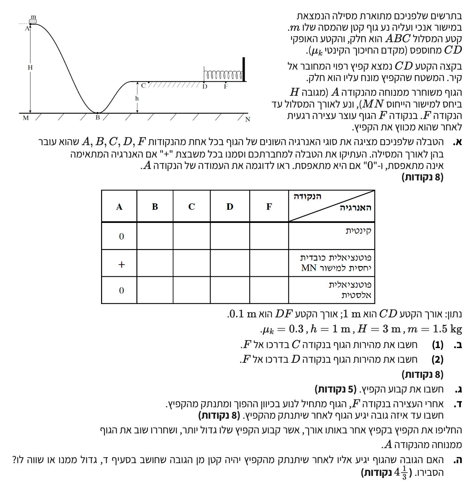

פתרון בגרות בפיזיקה
מכניקה 2010 - שאלה 4
פתרון מודרך, צעד-אחר-צעד, הכולל עבודה ואנרגיה
מבט כללי על השאלה
בשאלה זו אנו מנתחים תנועה של גוף לאורך מסילה הכוללת קטעים חלקים ומחוספסים, וכן התנגשות עם קפיץ. נשתמש במושגים של עבודה ואנרגיה לפתרון הבעיה.

סעיף א': טבלת אנרגיות
- גובה הנקודה \(A\): \( h_A = H \)
- גובה הנקודה \(B\): \( h_B = 0 \) (על מישור הייחוס)
- גובה הנקודה \(C\) ו-\(D\): \( h_C = h_D = h \)
- גובה הנקודה \(F\): \( h_F = h \) (המשטח אופקי)
- הגוף משוחרר ממנוחה ב-\(A\), כלומר \( v_A = 0 \).
- בנקודה \(F\) הגוף עוצר עצירה רגעית, כלומר \( v_F = 0 \).
\( E_k = \frac{1}{2}mv^2 \) \( U_g = mgh \) \( U_{sp} = \frac{1}{2}k(\Delta l)^2 \)
פתרון צעד-אחר-צעד:
ננתח כל נקודה:
- נקודה A: משוחרר ממנוחה אז קינטית = 0. גובה H אז כובדית = +. קפיץ רפוי אז אלסטית = 0.
- נקודה B: גובה 0 (מישור ייחוס) אז כובדית = 0. הקטע חלק אז לפי שימור אנרגיה יש לו מהירות, קינטית = +. קפיץ רפוי אז אלסטית = 0.
- נקודה C: גובה h אז כובדית = +. הקטע ABC חלק, הוא הגיע מגובה H שגדול מ-h, לכן נשארה לו מהירות, קינטית = +. קפיץ רפוי (מחובר ל-D) אז אלסטית = 0.
- נקודה D: גובה h אז כובדית = +. הקטע CD מחוספס אך מניחים שהגוף מגיע לקפיץ, לכן יש לו מהירות פגיעה, קינטית = +. רק נוגע בקפיץ (עוד לא כיווץ) אז אלסטית = 0.
- נקודה F: גובה h אז כובדית = +. עצירה רגעית אז קינטית = 0. קפיץ מכווץ בשיאו אז אלסטית = +.
| F | D | C | B | A | הנקודה / האנרגיה |
|---|---|---|---|---|---|
| 0 | + | + | + | 0 | קינטית |
| + | + | + | 0 | + | פוטנציאלית כובדית (יחסית ל-MN) |
| + | 0 | 0 | 0 | 0 | פוטנציאלית אלסטית |
סעיף ב': חישוב מהירויות בנקודות C ו- D
- מסה: \( m = 1.5 \text{ kg} \)
- גובה התחלתי: \( H = 3 \text{ m} \)
- גובה המישור CD: \( h = 1 \text{ m} \)
- מקדם חיכוך קינטי בקטע CD: \( \mu_k = 0.3 \)
- אורך הקטע CD: \( \Delta x_{CD} = 1 \text{ m} \)
- תאוצת הכובד: \( g = 10 \text{ m/s}^2 \)
(2) את גודל מהירות הגוף בנקודה D, נסמן \( v_D \).
\( W_{\text{םירמשמ אל}} = \Delta E \) \( E_k = \frac{1}{2}mv^2 \) \( U_g = mgh \) \( W = F_x\Delta x \) \( f_k = \mu_k N \)
חישוב מהירות בנקודה C (ב.1):
עבור הקטע ABC, אין כוחות לא משמרים שמבצעים עבודה (המסילה חלקה והנורמל מאונך לתנועה), לכן יש שימור אנרגיה מכנית: \( E_A = E_C \).
המהירות בנקודה C היא: \( v_C = 6.32 \text{ m/s} \).
חישוב מהירות בנקודה D (ב.2):
בקטע CD יש חיכוך. נחשב את העבודה שמבצע כוח החיכוך:
![]()
כיוון שהמישור אופקי, \( N = mg = 15 \text{ N} \). נשתמש במשפט עבודה-אנרגיה בין C ל-D:
המהירות בנקודה D היא: \( v_D = 5.83 \text{ m/s} \).
סעיף ג': חישוב קבוע הקפיץ
- מהירות בנקודה D: \( v_D = \sqrt{34} \text{ m/s} \)
- המשטח עליו מונח הקפיץ (קטע DF) חלק.
- הקפיץ מתכווץ עד נקודה F (\( v_F = 0 \)).
- כיווץ מרבי של הקפיץ: \( \Delta l = 0.1 \text{ m} \).
\( E_k = \frac{1}{2}mv^2 \) \( U_{sp} = \frac{1}{2}k(\Delta l)^2 \)
חישוב:
מכיוון שהקטע DF חלק, מתקיים חוק שימור אנרגיה מכנית בין הנקודות D ל-F. כיוון שהתנועה אופקית באותו הגובה (\( h_D = h_F = h \)), האנרגיה הפוטנציאלית הכובדית מופיעה משני צידי המשוואה ולכן מצטמצמת.
קבוע הקפיץ הוא: \( k = 5100 \text{ N/m} \).
סעיף ד': גובה החזרה של הגוף
\( W_{\text{םירמשמ אל}} = \Delta E \) \( E_k = \frac{1}{2}mv^2 \) \( U_g = mgh \)
חישוב:
נחשב את האנרגיה הכוללת של הגוף בנקודה F (ביחס למישור MN) ונחסר ממנה את עבודת החיכוך בחזור, לקבלת האנרגיה הכוללת בסוף התנועה (\( E_{end} \)). כאשר הגוף מגיע לגובה המקסימלי שלו במסילה השמאלית, הוא נעצר רגעית לפני שהוא מחליק בחזרה למטה. משמעות העצירה הרגעית היא שגודל המהירות באותו רגע מתאפס (\( v = 0 \)), ולכן גם האנרגיה הקינטית שלו מתאפסת לחלוטין.
נרשום את האנרגיה בסוף כסכום של אנרגיה פוטנציאלית כובדית (גובה) ואנרגיה קינטית, ונציב במפורש אפס באנרגיה הקינטית:
הגוף יגיע לגובה מרבי של: \( h_{max} = 2.4 \text{ m} \).
סעיף ה': שינוי קבוע הקפיץ
הסבר פתרון:
נבחן את תנועת הגוף מההתחלה ועד שהוא חוזר לנקודת השיא השמאלית:
- הגוף משוחרר מאותו גובה התחלתי A, ולכן האנרגיה ההתחלתית זהה.
- הגוף עובר את הקטע המחוספס CD ומגיע לקפיץ בדיוק באותה אנרגיה קינטית. קבוע הקפיץ לא משפיע על התנועה לפני הפגיעה.
- בגלל שקבוע הקפיץ גדול יותר, בהחלט נדרש כיווץ קטן יותר של הקפיץ כדי לאגור את האנרגיה. עם זאת, הקפיץ האידאלי עדיין יחזיר את כל האנרגיה המכנית שהושקעה בו (האנרגיה לחלוטין לא הולכת לאיבוד, היא פשוט נאגרת במהלך מרחק קצר יותר). לכן, הגוף יחזור לנקודה D בדיוק באותה מהירות שבה הגיע.
- בדרכו חזרה, הגוף יעבור שוב את כל הקטע המחוספס CD (אורך 1 מטר).
- לכן, עבודת החיכוך בהלוך ובחזור יהיו זהות לסעיף ד', וסך האנרגיה שהגוף מאבד זהה (\( -9 \text{ J} \)).
מכיוון שהאנרגיה ההתחלתית זהה ואובדן האנרגיה זהה, האנרגיה המכנית שתישאר לגוף תהיה זהה, ולכן הוא יגיע לאותו גובה.
הגובה שאליו יגיע הגוף יהיה שווה לגובה שחושב בסעיף ד'.